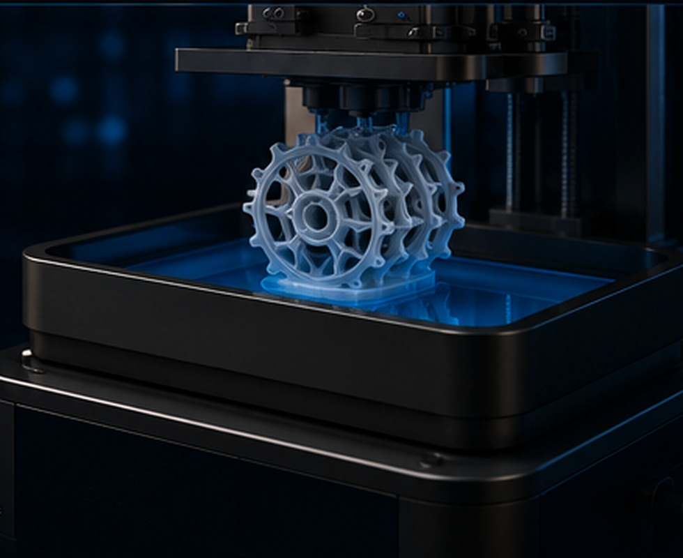
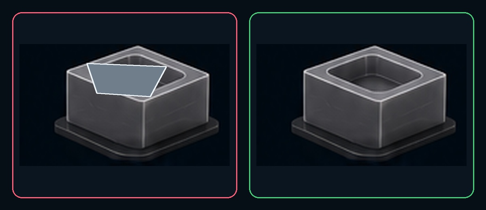
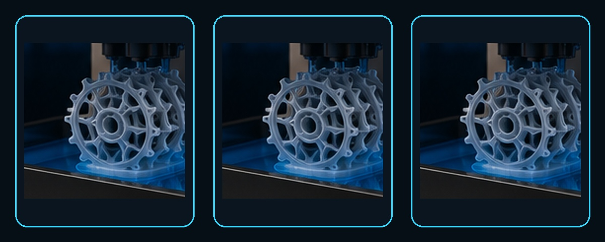
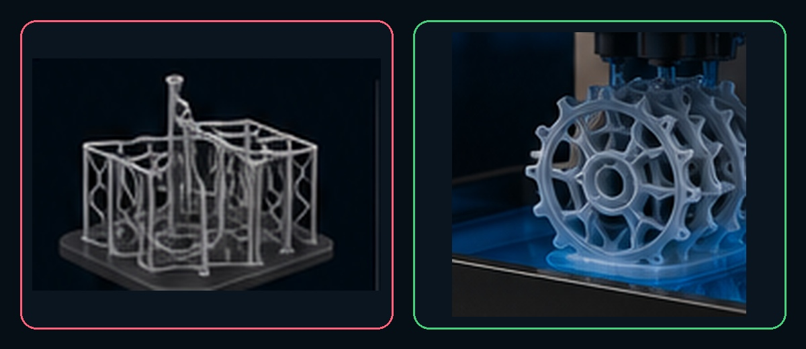

Como economizar resina em impressão 3D SLA/DLP/LCD
Reduza consumo sem transformar economia em fragilidade, falha ou retrabalho. Retire material onde ele não agrega função e mantenha material onde a peça realmente precisa.
Hollowing com segurançaEscala e estruturaSuportes e raftCalculadora de economia

Estrutura vazada com consumo otimizado — o equilíbrio que este guia busca entre economia e confiabilidade.
O processo em uma frase
Evite falha, retire volume interno desnecessário, ajuste escala quando permitido, otimize a estrutura e só então reduza suportes e raft — nessa ordem.
1
Onde a resina realmente vai embora?
O consumo não está apenas dentro do modelo. Suportes, raft, falhas e decisões de escala também entram na conta.
Volume do modeloPeças grandes e maciças carregam muito material que, em várias aplicações, não acrescenta função.
Suportes e raftNecessários para estabilidade, mas excesso de estrutura vira resina descartada e mais acabamento.
Impressões falhadasUma peça grande perdida pode consumir mais resina que várias otimizações pequenas somadas.
Escala do modeloUma pequena redução nas três dimensões diminui bastante o volume, porque o consumo acompanha o volume tridimensional.
2
1. Torne o modelo oco com responsabilidade
Esvaziar o interior pode reduzir muito o consumo, desde que parede, respiro, drenagem, lavagem e pós-cura tenham sido planejados em conjunto.
Parede + respiro + dreno
Peça oca planejada
Reduz volume interno, porém exige espessura coerente, aberturas reais e acesso para limpeza e cura.

Peça maciça tem mais massa e simplifica o preparo, mas pode usar material que não participa da função da peça.
Observe: economizar não é apenas retirar o miolo. Uma cavidade fechada ou impossível de lavar pode custar mais do que o material poupado.
Não afine no escuroQuanto menor a parede, maior a economia — e também maior o risco de deformação, quebra e falha em detalhes.
Evite câmara herméticaUma peça oca fechada pode formar sucção durante a impressão. Drenos e respiros ajudam a equilibrar pressão. Ver guia →
Planeje a lavagem internaO solvente e a resina precisam entrar e sair. Um único furo mal posicionado pode não resolver.
Revise o previewConfirme que não ficou cavidade fechada e que os furos aparecem desde as camadas corretas.
3
2. Reduza a escala quando a função permitir
Ao reduzir comprimento, largura e altura ao mesmo tempo, o volume cai de forma cúbica — não linear.

Uma pequena redução linear muda muito o volume
A mesma peça em três escalas — repare como o volume encolhe mais rápido que o tamanho aparente.
Exemplo prático
Reduzir um modelo para 80% em X, Y e Z não reduz o volume para 80%. O volume teórico passa para aproximadamente 51,2% do original (0,8³).
Excelente para miniaturas, protótipos visuais e estudos de forma. Não aplique escala indiscriminadamente em encaixes, dispositivos, modelos odontológicos ou qualquer peça com dimensão funcional.
Regra honesta: a escala economiza muito, mas pode alterar furos, tolerâncias, espessuras mínimas e legibilidade de detalhes.
4
3. Otimize a estrutura do modelo
Use parede, nervura, raio e reforço localizado onde a carga realmente passa. A meta é eficiência estrutural, não uma peça fina em todo lugar.
Evite cantos muito agudosCantos vivos concentram tensão. Raios e transições suaves distribuem melhor o esforço.
Use ribs e gussetsCostelas e reforços triangulares podem aumentar rigidez usando menos material que uma parede grossa inteira.
Furos e detalhes pequenosO limite reproduzível depende de pixel, dose, orientação, resina e compensação. Confirme com corpo de prova, não por um número universal.
A peça trabalha suspensaNa impressão bottom-up, o conjunto sofre ciclos de separação e flexão. Estrutura insuficiente pode falhar antes de o modelo terminar.
5
4. Remova suportes e rafts desnecessários
A orientação controla área transversal, altura, marcas, raft e quantidade de suporte. A melhor economia vem de uma configuração estável com o mínimo necessário.

Excesso de estruturas
Mais resina temporária, maior raft, mais marcas e mais tempo de remoção.
Estratégia otimizada
Contatos concentrados nos pontos críticos, estabilidade preservada e menos material descartado.
Sequência certa: primeiro garanta ilhas, cargas e estabilidade. Depois elimine redundâncias. Suporte de menos não economiza: apenas agenda uma falha.
6
5. Ataque o maior desperdício: a impressão falhada
Em peças grandes, uma falha pode consumir centenas de mililitros e várias horas de máquina.
🔍
InspecioneMalha, cavidades, ilhas, suportes e espessuras.
📐
OrienteReduza área transversal sem comprometer estabilidade.
🧪
Valide parâmetrosUse perfil calibrado para resina, camada e impressora.
▶️
Revise o previewProcure ilhas, cavidades fechadas e saltos estranhos.
📝
RegistreSalve orientação, perfil e resultado para repetir acertos.
7
Como o fatiador estima o consumo
Depois do fatiamento, o programa soma a área exposta em cada camada e converte esse conjunto em volume aproximado.
Use a estimativa como ferramenta de comparação: o valor é especialmente útil para comparar duas versões do mesmo projeto — maciço × oco, escala original × reduzida, orientação A × orientação B.
A estimativa do fatiador não representa sozinha o custo industrial. Separe resina da peça, suportes/raft e perdas operacionais; mão de obra, solvente, energia, descarte e tempo de máquina pertencem à planilha de custo, não ao volume de resina.
8
Calculadora de economia de resina
Compare os volumes reais informados pelo fatiador e aplique somente perdas operacionais observadas no seu processo.
Modelo + suportes + raft da versão atual.
Valor da nova versão, já refatiada.
Use custo ou preço conforme a finalidade da análise.
Número de impressões/peças equivalentes.
Resíduo e retrabalho observados sobre o volume fatiado.
Informe a meta validada; a calculadora não inventa redução.
Resultado
Consumo total atual—
Consumo total otimizado—
Diferença de resina—
Diferença estimada—
Variação indicada no fatiador
—
Variação total com perdas
—
Quantidade analisada
—
Custo original aproximado
—
Custo otimizado aproximado
—
Importante: porcentagem de falhas não é automaticamente igual a porcentagem de resina perdida. Informe a perda operacional medida; para custo comercial, some máquina, mão de obra, lavagem, energia, descarte e impostos separadamente.
9
Checklist antes de chamar uma peça de "econômica"
Economia verdadeira reduz material sem reduzir confiabilidade.
0 de 11 itens concluídos
10
Controle do consumo real
O volume fatiado mede a peça planejada. O estoque explica quanto material realmente saiu da operação.
Meça por lote ou ordem de produção
Registre massa ou volume carregado, devolvido e descartado.
Separe peça aprovada, suportes/raft, falha, amostra e derramamento.
Controle lavagem contaminada e resíduo aderido às ferramentas.
Compare consumo real com o somatório do fatiador.
Use a diferença para melhorar o fator de perda do orçamento.
Resina remanescente não é automaticamente perda
Mantenha o tanque protegido de luz, poeira e mistura acidental.
Após falha, filtre antes de reutilizar para remover fragmentos curados.
Não misture cores, formulações ou lotes sem procedimento aprovado.
Só devolva material ao frasco quando a política técnica permitir e sem contaminar o estoque.
Respeite armazenamento, homogeneização e validade informados pela Quanton3D.
↗
Fontes técnicas e limite de aplicação
Referências para hollowing, drenagem e diagnóstico. A aplicação da peça e os dados Quanton3D prevalecem sobre exemplos genéricos.
Use o fatiador para confirmar volume, parede e presença real dos furos.
Valide resistência e dimensão com corpos de prova da aplicação.
Não transporte espessuras, furos ou percentuais entre peças diferentes.
Economia calculada não substitui custo industrial completo.
✓
Conclusão técnica
A sequência mais eficiente é: evitar falha, retirar volume interno desnecessário, ajustar escala quando permitido, otimizar estrutura e só então reduzir suportes e raft.
Um modelo corretamente oco e bem orientado pode economizar muito. Um modelo apenas "afinado" pode consumir menos no arquivo e mais no chão da oficina.
Regra Quanton3D: a melhor economia é aquela que continua imprimindo certo, lavando direito, curando por completo e cumprindo a função da peça.
Diretriz técnica Quanton3D
Economia é função, não só peso
Compare versões no fatiador, faça testes menores, registre o resultado real e nunca aceite uma economia que comprometa a peça.